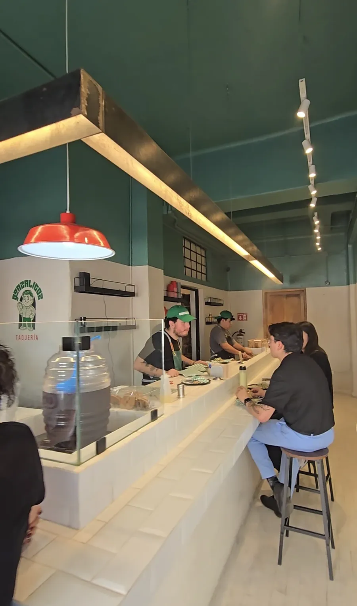
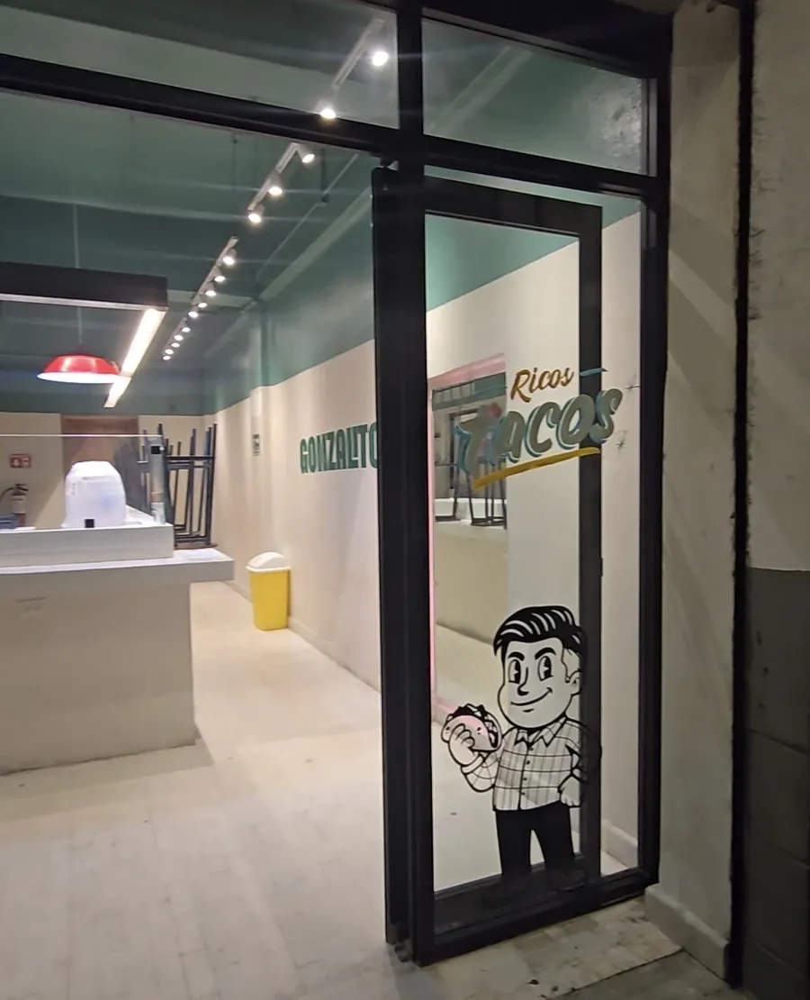
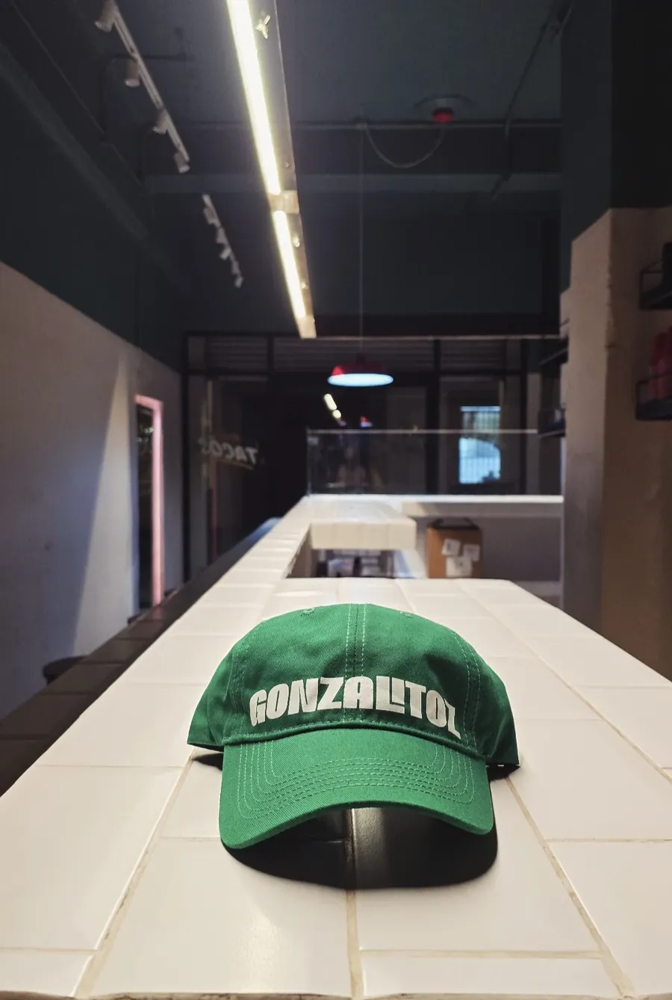
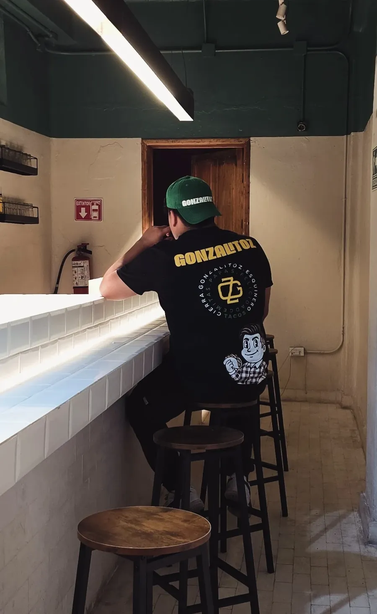
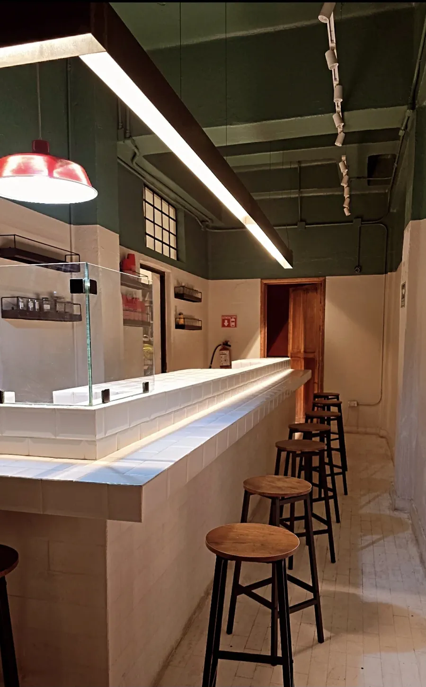

Taquería · Centro de Puebla
Tacos, GONZALITOZ y buenos amigos
Siempre son buena idea.
Tacos y cemitas con la receta de siempre y cinco sabores para atreverte: argentino, asada, chile quemado, esquinero y sierra.
Nuestras especialidades
Cinco formas de antojarte
Cada sabor viene en taco o en cemita. Toca la tarjeta para verlo de las dos formas.
¿No te decides? Cualquiera viene con 2 ingredientes: mitad y mitad, al mismo precio.
Nosotros
Lo de aquí, con experiencia de primera
GONZALITOZ nació en Puebla de un sueño: que comer tacos se viva con el mismo cuidado, la misma rapidez y el mismo orden que en las grandes cadenas de comida rápida.
No venimos a ocupar el lugar de la taquería de tu barrio. Queremos que, cuando se te antoje una cadena, la mejor opción sea una mexicana, hecha con producto de aquí.
Por eso cuidamos cada detalle, de la receta tradicional a la forma en que te atendemos, y le sumamos sabores nuevos para que siempre tengas algo que probar.
La receta de siempre
Carne asada con guacamole, cebolla y cilantro, en tortilla o en cemita. El taco que ya conoces, bien hecho.
Sabores para atreverte
Chile quemado con aderezo de cacahuate, salsa macha, chimichurri. Para cuando quieras variarle.
Atención de primera
Rápido, limpio y con buena cara. Como en las grandes, pero hecho en México.
El local
Pasa, siéntate en la barra
Así se ve GONZALITOZ en la Calle 9 Sur, en el Centro de Puebla.





Visítanos
En el Centro de Puebla
Calle 9 Sur 707, Local 4Col. Centro, 72000
Heroica Puebla de Zaragoza, Pue.
Abrimos todos los días, menos el jueves10:00 a. m. – 5:30 p. m.
¿Tienes una duda?
Escríbenos por WhatsApp221 281 8023 · no tomamos pedidos por aquíCalle 9 Sur 707, Local 4
El mapa es de Google y se carga solo si lo pides.
Redes
Síguenos
Promociones, nuevos sabores y lo que pasa en la taquería.